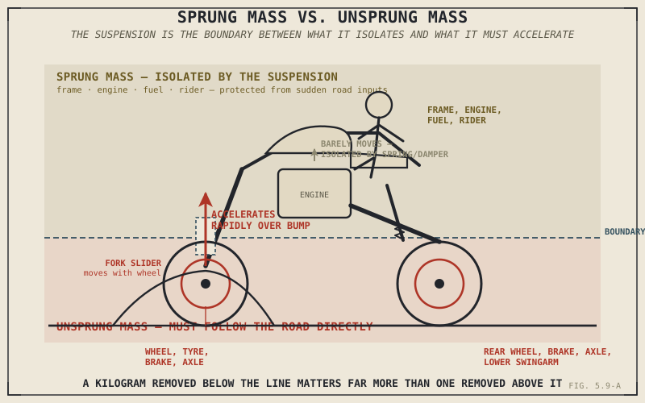

Shaving a kilogram off a motorcycle's wheels transforms how the suspension tracks a rough road far more noticeably than shaving the same kilogram off the rider. Not because wheels matter more than riders in some general sense — because the two kilograms are sitting on opposite sides of a physical boundary this part has quietly referenced since Chapter 4.8, and this chapter is where that boundary finally gets its full explanation.
Two Sides of the Suspension
Sprung mass is everything the suspension actively supports and isolates from the road: the frame, engine, transmission, fuel, bodywork, and rider — everything the springs and dampers this part has described are working to protect from harsh impacts. Unsprung mass is everything on the other side of that boundary: the wheel, tyre, brake disc and caliper, axle, and whichever fork component actually moves with the wheel — the lighter sliding tubes in the upside-down fork Chapter 5.6 described, or the heavier sliders in a conventional one. The swingarm sits partly in between, since it pivots rather than moving as a single rigid unit with the wheel, but the portion of its mass nearest the axle behaves, for practical purposes, as unsprung mass too.
Chapter 4.8 flagged the swingarm as a contributor to unsprung mass, and Chapter 5.6 flagged the fork's sliding components the same way, in both cases promising the full explanation for later. This is that explanation.
Why the Same Kilogram Isn't Equally Important
Here's the physics behind why unsprung mass deserves the outsized attention it gets. When a wheel meets a bump, the suspension has to accelerate that wheel — and everything else counted as unsprung mass — rapidly upward to follow the bump's profile, then back down again just as quickly on the far side. A basic consequence of force and acceleration applies directly here: for the same force the spring and damper can apply, a lighter mass accelerates faster than a heavier one. Lower unsprung mass means the wheel can follow a sudden road irregularity more quickly and precisely, keeping the tyre's contact patch tracking the surface exactly when Chapter 5.1 said that tracking matters most. Higher unsprung mass resists that rapid acceleration, meaning the wheel responds more sluggishly to sudden inputs, however well-chosen the spring rate and damping settings covered earlier in this part happen to be.
Sprung mass doesn't face this same rapid-acceleration demand, since the suspension's entire job is to isolate it from exactly that kind of sudden motion. This is why a kilogram removed from a wheel, brake rotor, or fork slider improves how well the suspension actually tracks the road by a disproportionately larger amount than the identical kilogram removed from the rider or the fuel tank — the two kilograms aren't doing the same job, so removing them doesn't buy the same thing.
Not all weight on a motorcycle counts the same. A kilogram the suspension has to accelerate rapidly to follow every bump costs far more than a kilogram the suspension exists specifically to protect from that same acceleration.

A motorcycle shown with sprung mass — frame, engine, rider — highlighted above the suspension, and unsprung mass — wheel, brake, axle, fork slider — highlighted below it, with a bump input shown accelerating only the unsprung side rapidly.
Why Racing and Performance Budgets Chase This Specific Weight
This physics explains a spending pattern that otherwise looks strange: forged or carbon-fibre wheels, lightweight brake rotors, and magnesium components routinely command a steep price premium specifically because they reduce unsprung mass, even when a manufacturer or racing team could remove more total weight elsewhere far more cheaply. The premium isn't about weight in the abstract — it's about which side of the sprung-unsprung boundary that weight sits on, and unsprung mass earns disproportionate engineering and financial attention precisely because it delivers a disproportionate handling benefit per kilogram removed.
A Common Misconception, Cleared Up Early
It's a reasonable, and wrong, assumption that any weight removed from a motorcycle helps handling by roughly the same amount regardless of where it comes from. This chapter's entire argument says otherwise: unsprung mass reduction delivers a genuinely outsized benefit to how precisely the suspension tracks the road, compared to removing the same mass from the sprung side, because the two kinds of mass face fundamentally different acceleration demands. This is one of the rare places in this book where the trade-off isn't just qualitative — it's a direct, quantifiable consequence of force and acceleration, and it's exactly why "lighter wheels" and "a lighter rider" are never quite equivalent upgrades, however similar they sound.
Where This Leads
Springs, damping, sag, travel, construction, adjustment, and now sprung versus unsprung mass — this part has now covered everything suspension actually is and does. Chapter 5.10 turns to application: how these pieces are actually combined and tuned differently for touring, sport, and off-road riding.
Key Concepts to Remember
- Sprung mass is everything the suspension supports and isolates from the road; unsprung mass is everything on the wheel side of that boundary, including the wheel, tyre, brakes, axle, and moving fork components.
- Lower unsprung mass lets the wheel accelerate more quickly to follow sudden road irregularities, keeping the tyre's contact patch tracking the surface more precisely — a direct consequence of the same force accelerating a lighter mass faster.
- Removing a kilogram of unsprung mass improves suspension performance by a disproportionately larger amount than removing the identical kilogram of sprung mass, because the two masses face fundamentally different acceleration demands.
- This is why lightweight wheels, brake components, and similar unsprung parts command a price premium specifically tied to their effect on handling, not simply their weight in the abstract.
Cross-References
| ← Ch. 4.8 | First flagged the swingarm as a contributor to unsprung mass; this chapter delivers the full explanation promised there. |
| ← Ch. 5.6 | Flagged fork slider mass as a direct example of unsprung mass in the conventional-versus-upside-down comparison; this chapter explains exactly why that mass placement mattered. |
| ← Ch. 5.1 | Established contact maintenance as suspension's true priority; this chapter shows unsprung mass as a direct, physical factor in how well that priority is actually achieved. |
| → Ch. 5.10 | Covers how spring, damping, travel, and now mass considerations are combined and tuned differently across touring, sport, and off-road riding. |